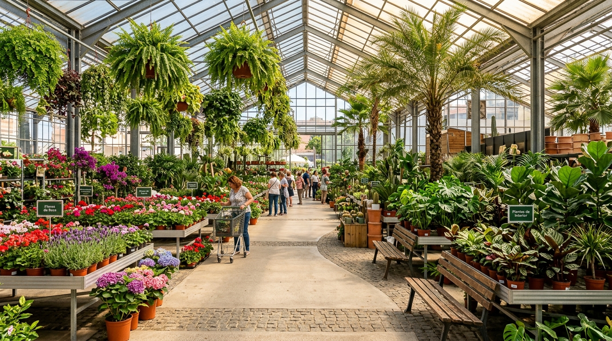
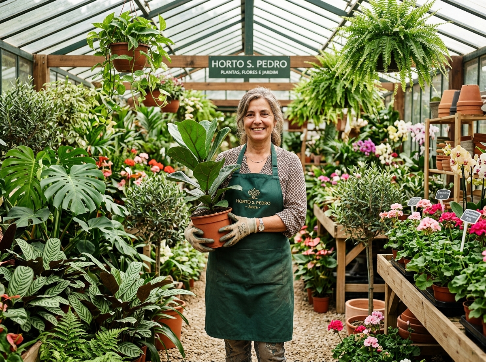
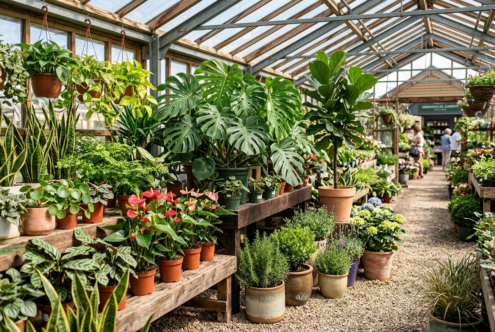
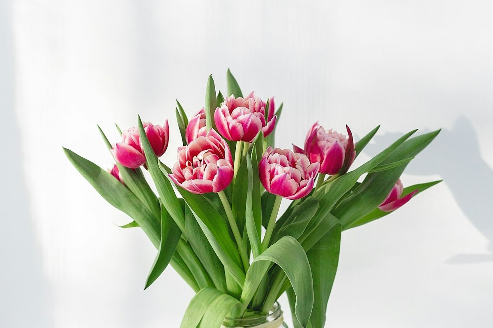
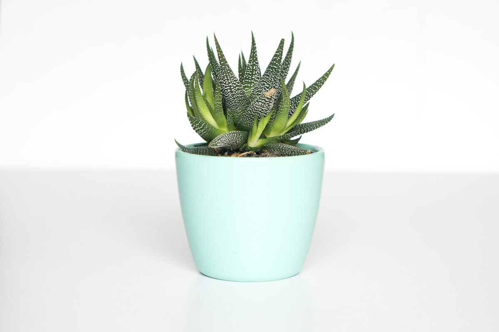

Centro de Jardinagem no Porto: O Seu Espaço Completo para Plantas e Flores
Procurando trazer mais vida e natureza para o seu ambiente? Mais do que uma simples florista, somos um horto especializado na Grande Porto, com produção própria e uma equipa pronta para lhe ensinar exatamente como cuidar das suas plantas.
Atendimento acolhedor e especializado em São Pedro da Cova.

Porque o Horto S. Pedro é a Referência em São Pedro da Cova e Gondomar?
Somos um centro de jardinagem completo com produção própria, localizado em São Pedro da Cova, com vasta experiência no cultivo de plantas de interior e exterior. O nosso grande diferencial é o conhecimento técnico: aqui não encontra apenas uma florista convencional, encontra especialistas apaixonados pela natureza.
A nossa equipa não apenas vende, mas ensina exatamente como cuidar de cada espécie, desde a rega correta até à transferência do vaso para a terra. Atendemos pessoas que cultivam em casa, decoradores de eventos e paisagistas de toda a Grande Porto, sempre num ambiente acolhedor e com a comodidade de um amplo estacionamento.
Os Nossos Serviços de Jardinagem e Florista para a Grande Porto

Plantas de Interior e Exterior
Dispomos de uma ampla variedade de plantas saudáveis e resistentes para todos os ambientes. Oferecemos orientação especializada sobre iluminação, rega e transplante de vasos para que o seu jardim ou apartamento ganhe vida.
Saber mais no WhatsApp
Florista e Decoração
Criamos arranjos florais de alta durabilidade e bom gosto para presentes, homenagens de luto e decoração completa para casamentos e grandes eventos em Gondomar e região.
Ver catálogo no WhatsApp
Acessórios de Jardim
Tudo o que precisa para o cultivo, manutenção e paisagismo num só lugar. Encontre substratos, vasos, ferramentas e acessórios de jardim em Matosinhos, Valongo e arredores.
Saber mais no WhatsAppProcura uma espécie específica ou precisa de ajuda com o seu projeto de decoração?
Por que Escolher o Nosso Centro de Jardinagem?
Know-how Especializado
A nossa equipa domina o cultivo. Nós partilhamos consigo todos os segredos para que as suas plantas cresçam saudáveis.
Estrutura Completa
Não somos apenas uma florista. Somos um centro de jardinagem com produção própria e uma enorme diversidade de flora e acessórios.
Estacionamento Enorme
Visite-nos com total tranquilidade. Dispomos de um amplo estacionamento gratuito à porta para facilitar o carregamento das suas compras.
Atendimento Acolhedor
Recebemos cada cliente com tempo e dedicação, entendendo as suas necessidades reais, seja para um apartamento ou para um grande evento.
Como Funciona o Nosso Atendimento
Aconselhamento Personalizado
Venha visitar-nos ou contacte-nos pelo WhatsApp. Diga-nos o que procura e qual o ambiente (interior, exterior, apartamento, jardim) para lhe recomendarmos as melhores opções.
Escolha e Orientações
Selecionamos as plantas mais saudáveis e explicamos-lhe o passo a passo dos cuidados: frequência de rega, poda e como transferir do vaso para a terra de forma segura.
Entrega ou Recolha
Pode levar as suas plantas e acessórios no momento, aproveitando o nosso estacionamento, ou agendar a entrega para a sua morada na Grande Porto.
Avaliações: O Que Dizem os Nossos Clientes
Com uma nota de 4,5/5 no Google, o nosso maior orgulho é a satisfação de quem nos escolhe para comprar plantas e flores no Porto:
"Excelente variedade de plantas de interior e exterior. A equipa explicou-me na perfeição como fazer o transplante sem danificar as raízes. Recomendo muito!"
— Cliente via Google
"Os arranjos florais são lindíssimos e duram imenso tempo. É sem dúvida a melhor florista de Gondomar, com um atendimento que nos faz sentir em casa."
— Cliente via Google
"O espaço é fantástico, com um estacionamento enorme que facilita muito. Nota-se perfeitamente o know-how da equipa sobre jardinagem."
— Cliente via Google
Centro de Jardinagem e Florista na Grande Porto
O Horto S. Pedro está orgulhosamente sediado em São Pedro da Cova, mas a nossa estrutura atende clientes de toda a Grande Porto. Fazemos entregas e prestamos serviço para apaixonados por plantas, decoradores e paisagistas em Gondomar, Maia, Porto, Matosinhos, Vila Nova de Gaia, Valongo e Paredes.
Endereço:
R. de Tardariz 1070, 4510-442 São Pedro da Cova
Horário:
Domingo a sábado, das 09h às 19:30
Contacto:
+351 224 637 429 (Telefone e WhatsApp)
Perguntas Frequentes sobre Plantas, Cuidados e Entregas
Visite o Nosso Centro de Jardinagem
Traga vida ao seu ambiente hoje mesmo. A nossa equipa está pronta para esclarecer as suas dúvidas e ajudar a encontrar as plantas perfeitas para o seu espaço.
Respondemos rapidamente durante o nosso horário de funcionamento.
Morada
R. de Tardariz 1070,
4510-442 São Pedro da Cova
Horário
Domingo a sábado,
das 09h às 19:30